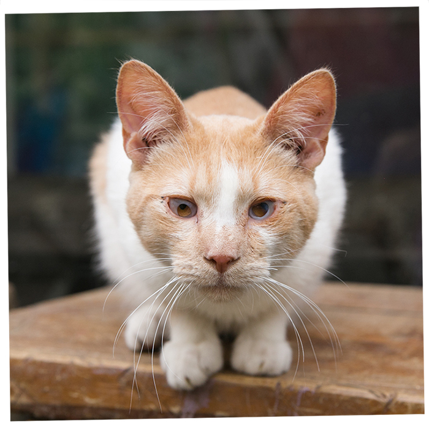
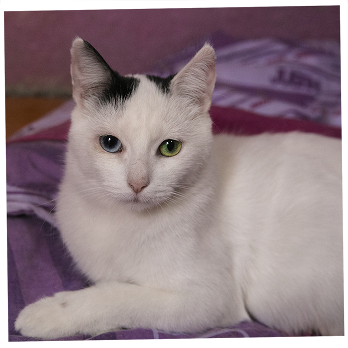
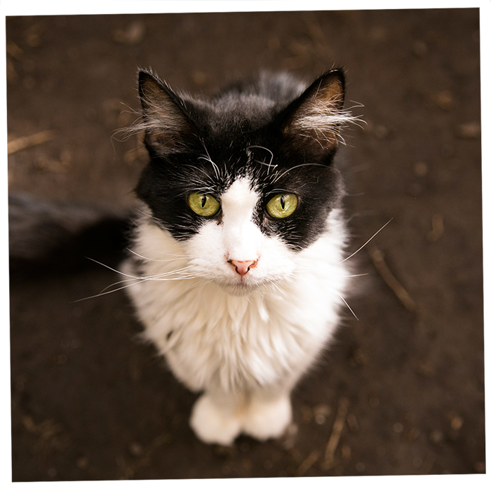

Gatos en adopcion!
Nuestro gatos que buscan familia!
Es una organización sin fines de lucro, dedicada al rescate,
rehabilitación y reubicación de gatos abandonados. Realiza, operativos
de esterilización y jornadas de adopción todas las semanas. Todos los gatos
que entrega están esterilizados desde los dos meses de edad. Mantiene dos albergues
de gatos y una red de hogares temporales, que acogen a los gatos rescatados
en espera de su adopción definitiva.

Joadiño

Jony boy

Maximiliano